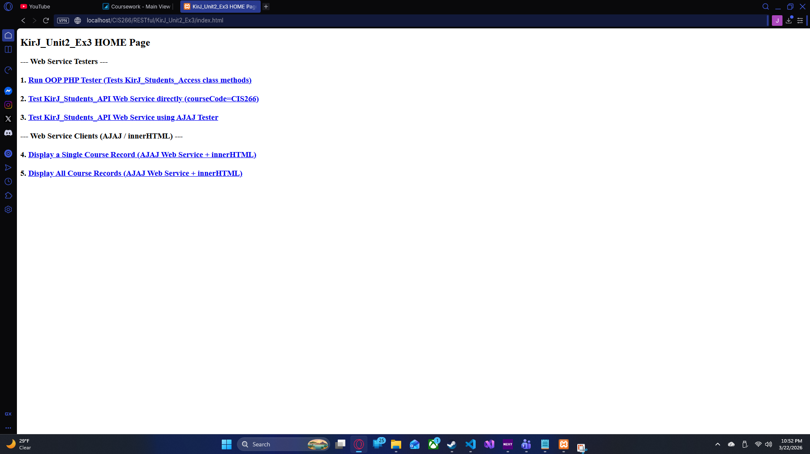
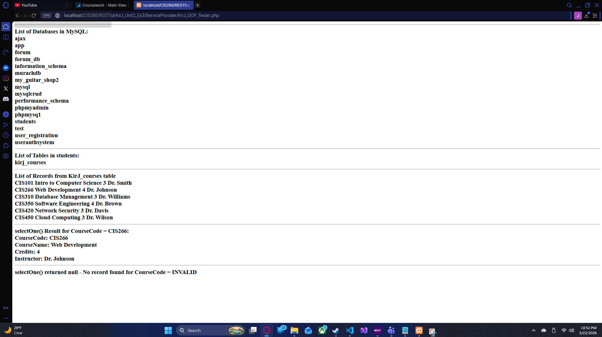
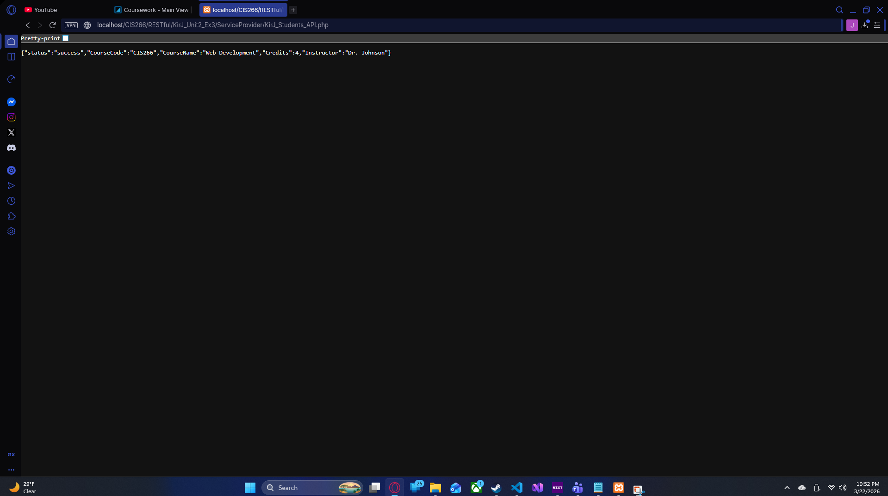
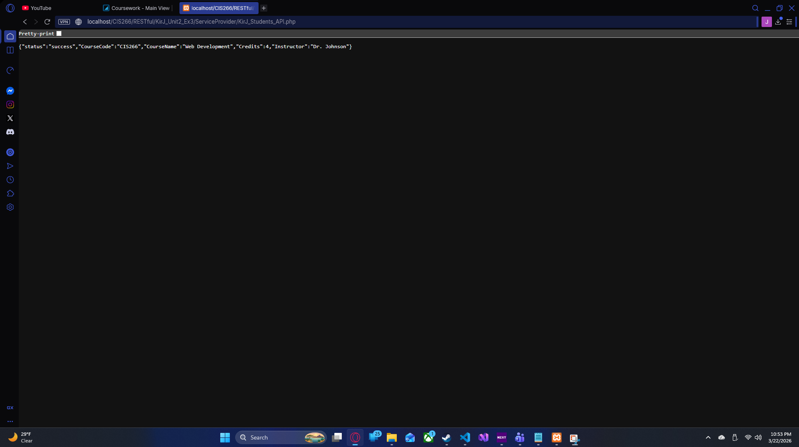
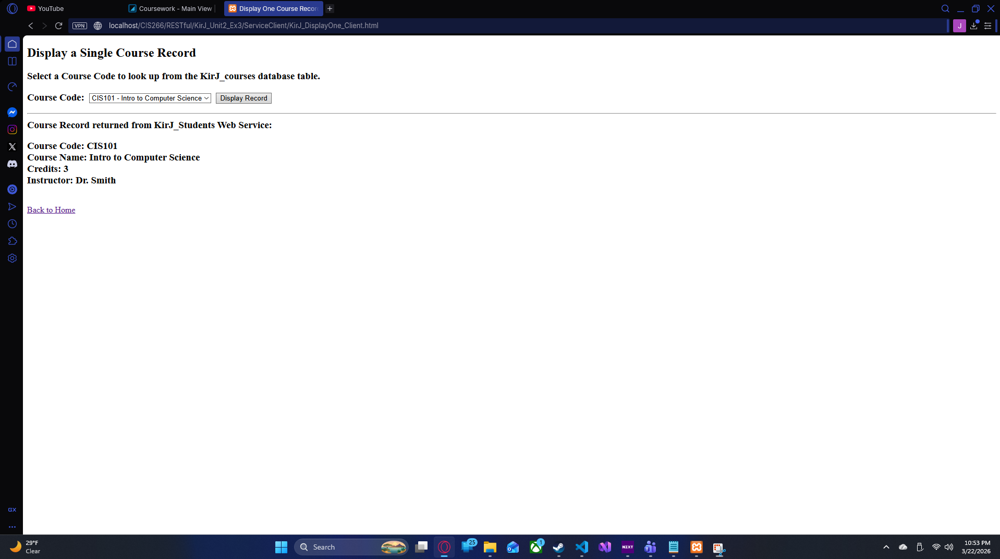
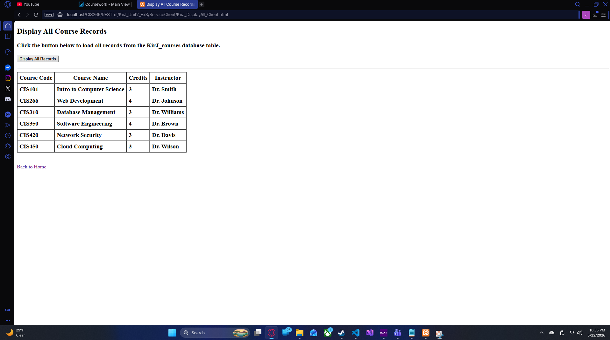

KirJ_Unit2_Ex3 — RESTful AJAX-JSON Web Service DYNAMIC
CIS 266 — Web Services · Spring 2026
A full RESTful web service architecture built with PHP and MySQL. The
Service Provider exposes two JSON endpoints: one that returns a
single course record by primary key (KirJ_Students_API.php) and one
that returns all records (KirJ_Students_DisplayAll_API.php). Both use
an OOP data-access class (KirJ_Students_Access) with prepared
statements (PDO-style MySQLi) against the students / KirJ_courses
MySQL table. The Service Client consumes those endpoints via
AJAX/jQuery, rendering results dynamically via innerHTML — no page reload.
Includes a standalone OOP tester and a raw API tester page.
Demo Screenshots





